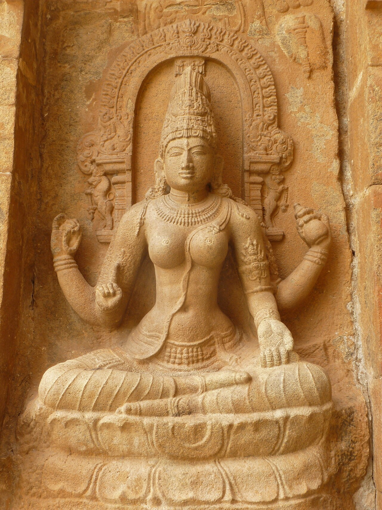

Musik, Tanz, Film und Sprache.

Zum Ende von Navaratri feierten die Tamilschulen der TBV die Göttin der Bildung. Beim Edu Thodakkuthal begann für die Jüngsten das Lernen.
22. Oktober 2026, Deutschland
Per WhatsApp schicken
Karnatische Musik und Bharatanatyam auf einer Bühne: Der Erlös des Abends im Forum 98 sollte vollständig an das Heim Vaazhvaham in Sri Lanka gehen.
22. August 2026, Zürich, Schweiz
Der Dokumentarfilm begleitet die trans Aktivistin Bhavadharini beim Fest in Tamil Nadu. Das Festival empfahl ihn in seinem Programm zum queeren Kino aus Indien.
25. Juli 2026, Stuttgart, Deutschland